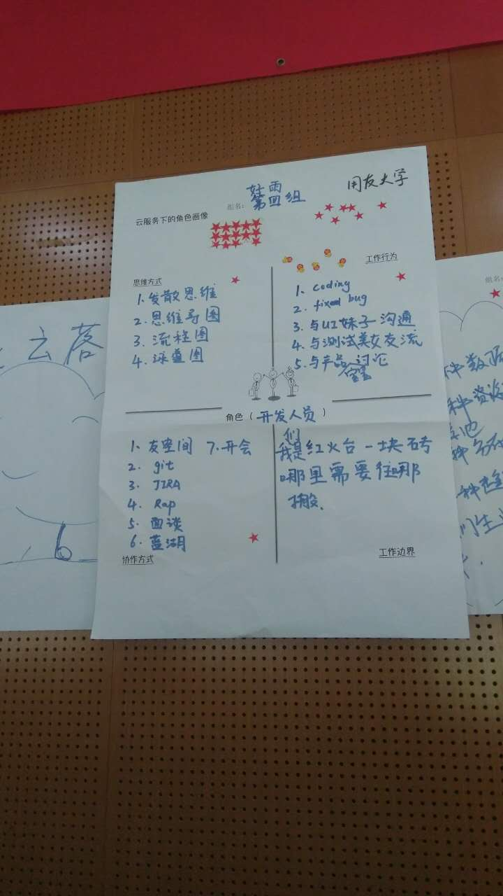

今天参加了"与云同行"全员轮训,很高兴又回到了用友软件园,今天特意去看了下F106可惜没开门...西区的办公室没去看也挺怀念大家围着圆桌一起办公的日子...
"大家早上好","好,很好,非常好" 张林总简简单单的问好就让小伙伴们燃起来了,兴致高涨.对于我个人来说可能"好,很好,非常好"是我参会的重要收获.单独看很简单的六个字,但是喊起来真的很提神啊有木有?上午,张林总授课中就什么是云让大家讨论并写出自己的答案,我们组都是程序员可能会从程序员的角度考虑问题,想到了数据,资源池,云计算,云安全,还有将来我们会生活在云中.可能并不是正确的答案.授课中提到"云"将来会成为基础公共设施这个表示赞同,毕竟现在网络现在已经在我们身边,刷微博,聊微信,看知乎已经成为一种日常习惯.
第二个印象比较深刻的就带盐,我们组抽到的是为畅捷支付代言,我们给畅捷支付想了个口红"畅捷在手,支付无忧".说实话,日常生活中并没有接触过畅捷支付,通过短片了解到这是商家端用的东东集合了各种支付方式,让商家降低接入支付方式的成本.当然了,除了分给我们的畅捷支付还有很多比如有空间,红火台等等,通过这个也让我们知道了用友现在有那么多云服务.包括:云平台,领域云,行业云,小微企业云,企业金融云,等等.领域云里面包括政务云,人力云,采购云,营销云,协同云,电子发票,云通信等.行业云里面包括:餐饮云,建筑云,汽车云,金融云,能源云,政务云等...老涂下午也来到现在,让我们知道了红火台餐饮云在用友云里面是一个特殊的存在,不仅面向企业同时也面向顾客.
最后参与的是用户画像,原谅我把我们组并不完美的成果展示出来.

我在课上也做过总结,可能当时想的不全,但是毕竟是自己组的感觉还是自己组的好^_^ 我们组(好雨组,口号是:好雨让云落地)基于程序员本身的自画像.思维方式: 程序员面对的都是需求,要有发散思维和逆向思维.这些需求载我们这里就变成了各种思维导图,流程图,泳道图等等,方便我们思考和编写代码. 工作行为: 包括Coding,fix bug,与UI,测试,产品沟通.张林总点评的时候说沟通属于协作方式,不过程序员的工作中绝大部分时间都是在和其他部门交流沟通,真正写代码的时间并不多.协作方式: 我们写了程序员日常生活中的必需品.工作边界: 我们是红火台的一块砖,哪里需要往哪搬.不管是海底捞pad重构,还是基础SaaS研发,哪里需要就去哪里.
以上,是今天的收获 ^_^